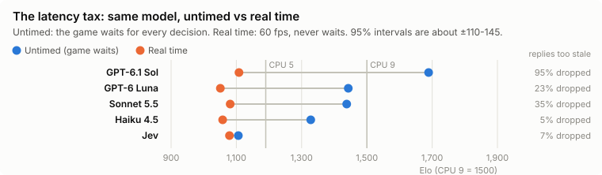

Melee bots are getting really good
TL;DR. People have been building bots for Super Smash Bros. Melee for ten years, and the last two months were the busiest of all: the strongest bot yet, a bot you steer with English commands, top players beating an AI crew on stream, a ranked ladder for bots only, and a simulator that runs the game 100 times faster. Over two days I put all of it on one Elo scale: Melee's own CPUs, the published learned bots, and frontier LLMs in five different roles. The learned bots are far ahead. LLMs pressing the buttons in real time play like a level 4 CPU; given unlimited time to think, the best one beats the hardest CPU, and so do bots that LLMs wrote in 30 minutes. The surprise came from coaching: a small bot coached by four frontier LLMs did best with no coach at all, just the words "Don't die."
Melee came out in 2001 and people still play it competitively. It runs at 60 frames per second and waits for nobody: one second of thinking is 60 frames in which you can get hit, grabbed and thrown off the stage. That makes it a hard target for AI, and its community has built absurdly good open tooling around it: Slippi for online play and replays, libmelee to read the game and press buttons from Python, and a decompilation of the game's own code.
I came to it with a question about LLMs. Most game benchmarks for them are turn-based (chess, Pokémon, Slay the Spire), where the game waits while the model thinks. I wanted a game that doesn't. The LLMs turned out to be the smaller part of the story, so this post starts with the bots.
Melee in 30 seconds
Two characters fight on a small floating stage. Every hit raises the other player's damage percentage, and the higher it is, the further they fly. Knock them off the screen and they lose a life (a "stock"). Four stocks each, eight minutes, last one standing wins. It sounds simple, but at a high level it is about reactions measured in single frames and reading what your opponent will do next.

14 seconds of a bench game, redrawn from the replay file: Faynt (blue) takes a stock off Phillip (red), both playing Fox.
Every game in this post is Fox against Fox, a staple of top-level play, on two standard tournament stages.
Ten years of Melee bots, and why now
- 2001, the built-in CPUs. Scripted, levels 1 to 9. Level 9 jabs and grabs on the exact frame, but it almost never shields, always recovers the same way, and loses to one move repeated.
- 2015, SmashBot. Dan "altf4" Petro wrote a Fox bot by hand: goals, tactics and exact input sequences, driven by the game's frame data and with zero reaction time. He presented it at DEF CON 24 and it played pros in 2017. Its plumbing became libmelee, which almost every bot since is built on.
- 2017, Phillip. Vlad Firoiu at MIT trained a neural network by reinforcement learning alone: no human games, just playing itself. It beat professional players, but it reacted in about 2 frames where a human needs 12 to 15. The follow-up made it play at human speed.
- 2018-2022, Slippi. Replay files in 2018, rollback netplay in 2020, a ranked ladder in 2022. Suddenly there were hundreds of thousands of recorded human games to learn from.
- 2020-2024, Phillip again. slippi-ai set the recipe everyone uses now: first copy humans from replays (behaviour cloning), then improve by self-play while staying close to human play, with a human-like reaction delay of 18 to 24 frames built in. In late 2024 it played top players in public: Zain won a first-to-5 5-3, and Moky lost a first-to-10 3-10.
- 2025, cheap and open. Eric Gu's HAL cloned pro Fox games into a 20M-parameter transformer for about $5 of compute, and it beat the level 9 CPU 95% of the time. MIMIC followed with one model per character. Both published their weights.
- October 2026, humans against robots, on stream. Top players took on Phillip in two crew battles, on 1 October and 17 October. The humans won both, with Mew2King as the last player standing each time.
- October 2026, Faynt. Frisson Labs released one 10M-parameter model that plays all 26 characters and won 240 of 244 games against Phillip's public releases. It reacts instantly while those keep their delay, so the comparison is not a fair one, but it is the strongest bot with public weights.
- October 2026, HAL scaled up. A 247M-parameter version reached about 2200 Elo, the top 1% of the human ladder.
- October 2026, stomped.dev. A ranked ladder for bots only. Your bot gets 11 ms per frame to answer.
- 11 November 2026, Reyn. Three days before this post, Frisson Labs released a bot you steer with a set of English commands.
- And a simulator. melee-sim-light runs the decompiled game without an emulator, about 100 times faster.
The last six weeks alone changed the picture. The strongest bots can be downloaded and run on one home GPU. One of them has a language interface that an LLM can talk to. The game can be simulated far faster than real time. Cloning a decent bot costs a few dollars, and there is a public ladder to test it on. Nobody had put these bots on one scale, or asked where an LLM fits among them. So that is what I built, along with a website to watch it, an AI commentary booth, and a bot of my own.
How the best bots work
None of them look at the screen. Through libmelee they read the game's memory every frame (positions, speeds, the current animation and how far into it, damage, stocks) and answer with a full controller state: both sticks, the triggers and every button. And almost all of them follow slippi-ai's recipe: copy humans first, then get better by playing against themselves. That is AlphaGo's recipe minus the search: AlphaGo also looked moves ahead, which a bot with 16 ms per frame and no way to rewind the game can't. The closest cousin is DeepMind's AlphaStar for StarCraft II, also real time, also cloned from human replays, then self-play with a penalty for drifting away from human play.
- Faynt (Frisson Labs) is a small transformer: 10M parameters in 5 layers of width 384, with a 75M sibling (11 × 768). It keeps a cache of the last 256 frames and takes one step per frame. Training has three stages: behaviour cloning on about 840,000 ranked replays; a "winner curriculum" that ends on 90% games won by Master-ranked players, with the 75M model distilled into the 10M one; then reinforcement learning (PPO) by self-play in Fox mirrors, 96 emulators on one GPU, with a penalty for drifting away from the human-like policy. RL took the 75M model from 25 to 58 wins in their test. It runs with zero reaction delay.
- Phillip (slippi-ai, vladfi1) is a recurrent network rather than a transformer. Its output head picks the controller in two steps: one of 728 combinations of buttons, triggers and C-stick, then one of 85 main-stick positions given the first choice; Faynt reuses this encoding. It is cloned from ranked and pro replays, then trained by self-play with the same pull back toward human play. Its trademark is the delay: it sees the game 18 to 24 frames late, like a human reacting, which also makes it play well online.
- HAL (Eric Gu) is the biggest: a 247M decoder-only transformer with 256 frames of context, trained in 16 hours on one B200 on about 1.3M games (13.5 billion frames) from ranked play and 38 pros. It predicts 4 frames of inputs at a time and replans every 2, which hides its compute time. It is pure behaviour cloning, steered by asking for a given level of play (a "return target") or a given player's style, like "play like Cody". Gu's key finding: a frame of reaction delay hurts twice as much as a frame of acting without new information.
- MIMIC (erickfm) takes HAL's recipe per character: about 20M parameters, a 180-frame window, a dedicated button head so it can wavedash, and a little RL on skills the game can check, such as L-cancel rate.
- Reyn (Frisson Labs) is Faynt plus language steering, but not a vision-language-action model: there is no LLM and no image inside. Frisson labelled human replays with instructions using rules ("this is a grab", "this goes to the top platform") and trained Faynt's policy to play conditioned on them; then they froze the 10M policy and trained about 2.2M parameters of adapters with RL, penalised for drifting from unsteered play. At play time a small router maps your phrase onto one of a fixed set of learned commands, or rejects it. So it follows a menu of English commands rather than understanding English, which matters later.
The numbers that matter: these networks are tiny next to an LLM (10M to 247M parameters), they answer in 2 to 8 milliseconds a frame on one home GPU or even a CPU, and their strength comes from human replays plus self-play, not from reasoning. That is the gap the rest of this post measures.
The benchmark
Everything runs on my home server: the real game, from my own disc, in the Slippi version of the Dolphin emulator. A Python library reads the game state every frame and drives a virtual controller. A dozen games can run side by side.
The opponents and yardsticks:
- Melee's built-in CPUs, levels 1 to 9.
- Three small scripted bots (one runs in, one shoots lasers, one spams Fox's "shine" move).
- Five learned bots, neural networks trained on human replays, all published with weights: Phillip (vladfi1, in skill tiers from silver to gm, with a human-like reaction delay built in), HAL (Eric Gu), MIMIC (erickfm), Faynt (Frisson Labs) and Reyn, from the same lab as Faynt: a small bot steered by English commands from a fixed set, like "be more aggressive" or "edgeguard from the stage", about 100 of them for Fox.
LLMs are far too slow to press buttons every frame (a frame is 16.7 ms; a reply takes 1-3 seconds), so every setup gives the LLM a higher-level job and lets something faster handle the frames:
- The LLM plays, untimed. It reads a short text description of the game and picks a move (
laser,shine,wavedash,recover,grab then up-throw...), which my code turns into button presses. The game pauses while it thinks, so this only measures how good its choices are. - The LLM plays, live. The same, at full speed. While the model thinks, the character keeps doing the last move or a safe default, and a few reflexes never wait for the model. A reply older than 2 seconds is thrown away.
- Jev plays. Jev is TypeSafe's fast decision model: it answers multiple-choice questions in about 0.15 seconds instead of 1-3, but it can't write text.
- The LLM coaches Reyn. Reyn plays every frame, and every 5 seconds the coach looks at the game and picks one of Reyn's English commands.
- The LLM writes a bot. A coding agent gets 30 minutes, a sandbox, the docs and a practice tool, and has to write a Python bot that then plays like any other entrant.
Here is what the model sees, about 150 words per moment:
f1370 time 7:38
YOU FALCO 58% 4stk | pos (-36,38) vel (+0.0,-2.0) face L air | nair f19 [ACTIVE] | jumps 1, busy | 33 from edge
OPP SAMUS 60% 4stk | pos (-25,0) vel (+0.9,+0.0) face R ground | walk_fast f15 | jumps 2, actionable | 44 from edge
REL opp is right+below: dx +11 dy -38 dist 40; you face AWAY from opp; opp faces away from you
EVENTS you hit opp 10x +27%
RECENT DECISIONS:
f1230 laser(short,1) → laser: fired 1, landed
The models were Claude Haiku 4.5, Claude Sonnet 5.5, GPT-6 Luna and GPT-6.1 Sol, with reasoning turned off (with it on, Haiku spent its whole budget thinking and never answered).
One scale for everyone
Every entrant plays the same game: Fox vs Fox, Battlefield or Final Destination, 4 stocks, 8 minutes. All the results go into one Elo fit, the rating system from chess: 400 points of difference means the stronger side wins about 10 games out of 11. The hardest CPU, level 9, is pinned at 1500, and every rating comes with a 95% interval.
There are two boards, because "LLM plays" means two things: a real-time board where the game never waits, and an untimed board where it waits for every decision. CPUs and bots play the same either way, so they appear on both and tie the two scales together.
Nobody picked the games by hand. A scheduler chooses the next game every few seconds, favouring games that would tighten the widest intervals for the fewest tokens. Cheap bot games get played a lot; expensive LLM games go where they teach the most. Overnight it played 1,573 games in 9.0 hours, and with older games that met the same rules and a follow-up study, the boards hold 2,459 real-time and 2,018 untimed games.
What I found

From the top:
- Faynt never lost: 390–0, most of it against Phillip gm. With a perfect record the fit can only say "much better than everyone", so its 3358 is really a floor. Then Phillip gm (2488) and HAL (2234).
- Reyn being coached sits around HAL, whoever the coach is. And right near the top, Reyn with no coach, holding "Don't die." More on that below.
- The bots LLMs wrote cluster around the level 9 CPU.
- CPU levels barely matter in a Fox mirror. Level 9 is 1500 and level 8 1439, but levels 1-7 sit between 1074 and 1275 in no useful order: level 1 (1250) is above level 5 (1194). The CPU Fox jumps off the stage by itself a lot, and that matters more than its level.
- At the bottom: every LLM playing live, 1055 to 1114, about a level 4 CPU, together with live Jev.
1. In real time, speed beats smarts

Given time to think, the models spread out: GPT-6.1 Sol beats the level 9 CPU (1692), the other three land between 1327 and 1438, and all of them beat Jev (1107). Bigger models make better choices than the fast one.
Live, all of that disappears. Every model loses 272 to 578 points, and they end up level with each other and with Jev. Sol, the best thinker, is the clearest case: its replies take 2-3 seconds, so 95% of them arrive too late and get thrown away. Live Sol is basically my default behaviour with an LLM occasionally getting a word in, and it still rates as high as any other live LLM (1114). At this speed, the LLMs add nothing measurable over the simple autopilot they're wrapped in. Even Haiku, fast enough that only 5% of its replies are dropped, acts on a game state about 70 frames old, and in Melee that's several exchanges ago.
LLM Colosseum found the same thing in Street Fighter (GPT-3.5 beat GPT-4 by being faster); this puts it on a scale with error bars.
2. The best coach is two words

Reyn with no orders rates 1746. With any coach it jumps by about 300 points, to HAL's level. But the obvious control, a "coach" that picks a random command every 5 seconds without looking at the game, gets most of that jump (2068). The four LLM coaches land +64 to +191 above random, and each of their intervals overlaps the random coach's. Only Jev is clearly better (2346).
So I dug in, with about 25 extra games per variant:
- Reyn mostly needs any command. One random command held for the whole game already gets it to 2018. Changing it every 5 seconds adds little on top.
- Holding "Don't die." all game, with no coach at all, rates 2398: level with the Jev coach, above every LLM coach, and about 330 above the random one.
- Jev wins by accident. Its favourite pick is "kill now", and Reyn's language layer maps that, every single time, to "Don't die." Counting that, Jev holds "Don't die." 41% of the time. The LLMs pick sensible-sounding plans (edgeguard, play aggressively) that turn out to be worth less.
- How often the coach speaks (every 1, 5 or 15 seconds) and giving it extra computed features made no measurable difference.
The lesson is less about LLMs than about the bot: the instruction that matters most is the boring one, and a language interface can quietly turn your coach's words into something else.
3. An LLM can write a level 9 CPU in 30 minutes

One 30-minute coding session per model, so one run each:
- Sonnet 5.5 wrote a compact 135-line bot that shines, grabs shielding opponents and shoots lasers from afar: 1663, just above the level 9 CPU. It declared itself done after 21 minutes and ignored about 25 "keep improving" nudges.
- Haiku 4.5 wrote the simplest bot, 108 lines that mostly call a built-in shine combo: 1609, and the only written bot to take a game off a learned bot.
- Opus 5.5 wrote the most engineered one, 303 lines with a move queue, frame-data-based defence and combos: 1542, the weakest of the three.
- An earlier Sonnet pilot held a button instead of tapping it, so its main move rarely came out, and it fell off the bottom twice a game: 968, the lowest rating on the board.
Two runs of the same model differ far more than different models do. A few lines of input timing decide everything, so this ranks nothing yet.
4. Screenshots don't help
Given a screenshot instead of (or with) the text description, Haiku did worse: against a level 5 CPU, text only went 4–4, screenshot only 1–7, both 5–3 (8 games each). On images alone it mostly didn't notice it was hanging off the ledge. In a test on 100 frames, every model read the damage numbers almost perfectly but got left/right and facing at about chance.
What else I built
A website to watch it all
The website shows the boards with a page per entrant (record, recent games, sample decisions), every game running on the server drawn live in 2D, a launcher to set up any matchup, every replay with the AI's decisions on a timeline, and these docs. The Live page streams the real game with a broadcast-style score bar and a feed of what each AI is thinking, timed to the video.
An AI commentary booth
The Live page has two AI casters: Charlie on play-by-play ("loud, fast, loses his mind on big moments") and Laura on colour ("quick, dry wit, teases Charlie"). A fast LLM watches the game's events (combos, stocks lost, zero-to-deaths, self-destructs) and writes a line or two every few seconds, and ElevenLabs voices them. To keep costs down, voices are only made while someone is listening. A real exchange from a Faynt vs HAL game:
Charlie: HAL MASTER's Fox is in the air and Faynt's Marth is waiting for him! Laura: Waiting is the right word. Faynt doesn't chase, Charlie, he collects.
Our own bot: MeleeBot
On the second day I trained a bot of my own, the way HAL did: a small transformer that copies human play, trained on 23,000 ranked online Yoshi games. It reads the last 4 seconds of the game and predicts the next controller input.
- The first version (6M parameters) lost all 12 of its games against the level 9 CPU. It took less than one stock per game.
- A 20M version won 1 of 12 and took about twice as many stocks per game.
That is still clearly below the level 9 CPU. The published bots got strong in the second stage, self-play, and that is where this one goes next.
A simulator
Melee's community has decompiled the game's code back into C, and melee-sim-light runs it without an emulator. I hooked all our players into it, including the learned bots, and checked it against real games: 287 of 300 replays matched frame for frame (the other 13 were unfinished files), and the game itself runs about 100 times faster than in the emulator. Its catch: there are no built-in CPUs.
Playing the bots yourself
You can play the bots yourself, on a laptop with a controller (Phillip at any skill tier, Faynt or Reyn with a command of your choice) or from home over Slippi's online direct connect. The board has a slot waiting for human results. Come try.
Built on Slippi, libmelee, Slippi Lab and melee-sim-light, with the bots of vladfi1 (Phillip), Eric Gu (HAL), erickfm (MIMIC) and Frisson Labs (Faynt, Reyn), TypeSafe's Jev and ElevenLabs voices. Related work I leaned on: StarSkirmish, SpireBench, VideoGameBench and Qwen plays Smash. Technical details for every part are in the docs.